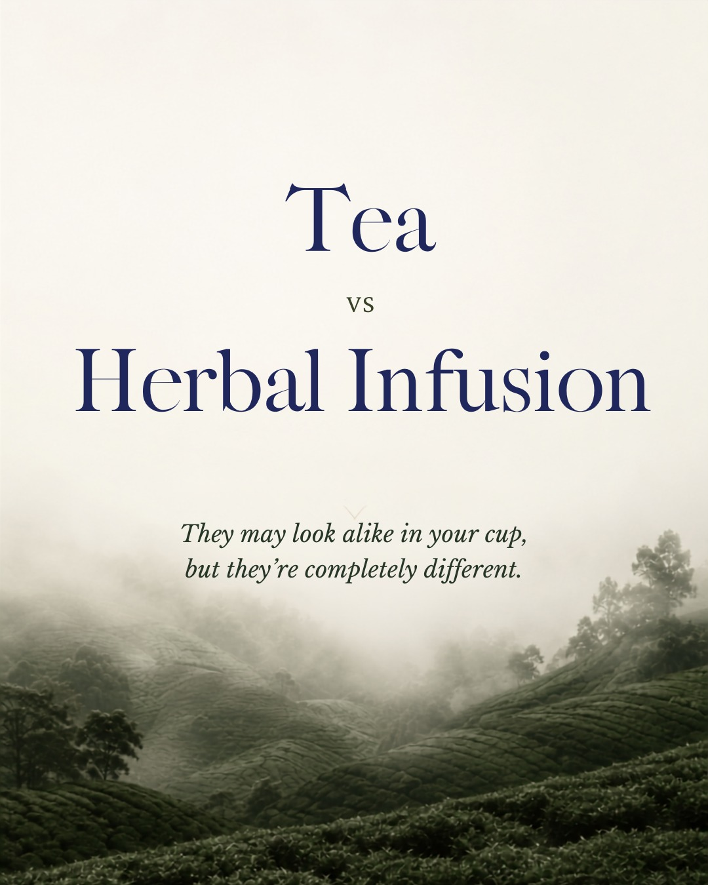
HERBAL TEA
Social Media
Campaign
Project Type
Freelance - Social Media Design
Project Type
Post Design, Visual Direction, Brand Consistency
The Brand
A herbal tea brand that brings balance, calm and natural goodness in every cup.
BrewSage
My Approach
I focused on a clean, refreshing and minimal luxury design style, using natural elements to build a sense of calm and trust.
Deliverables
Social Media Post
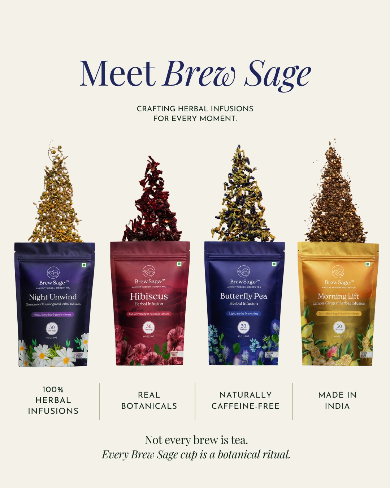
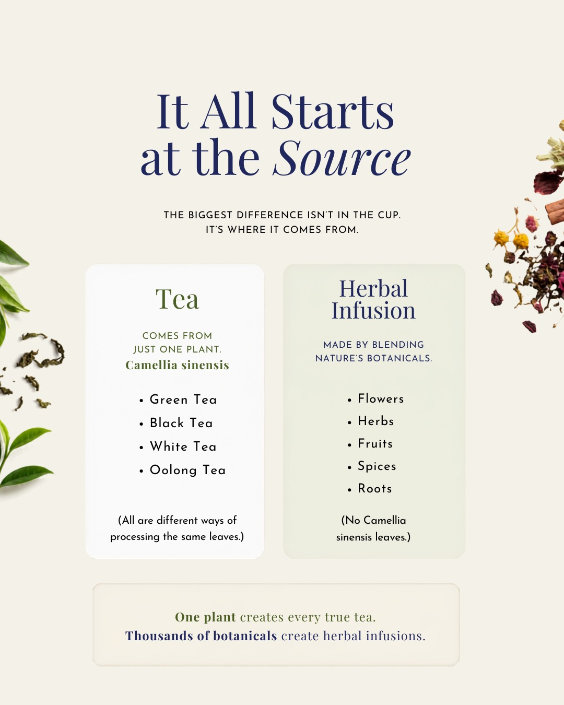
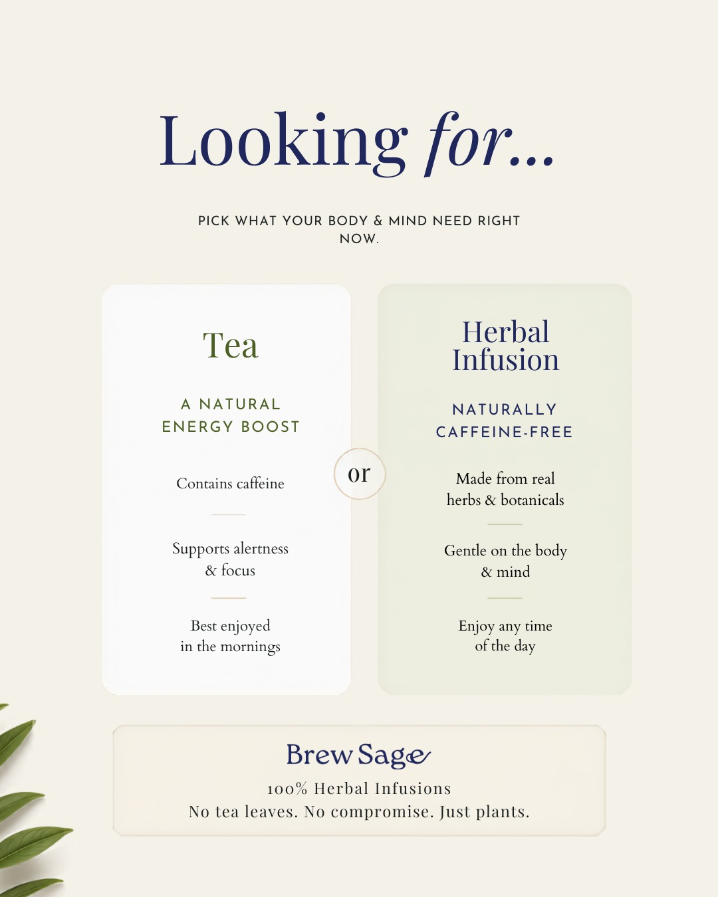
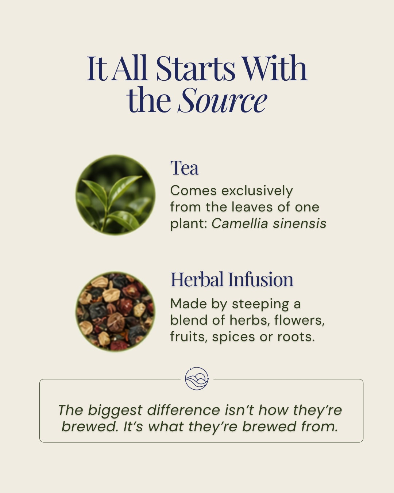
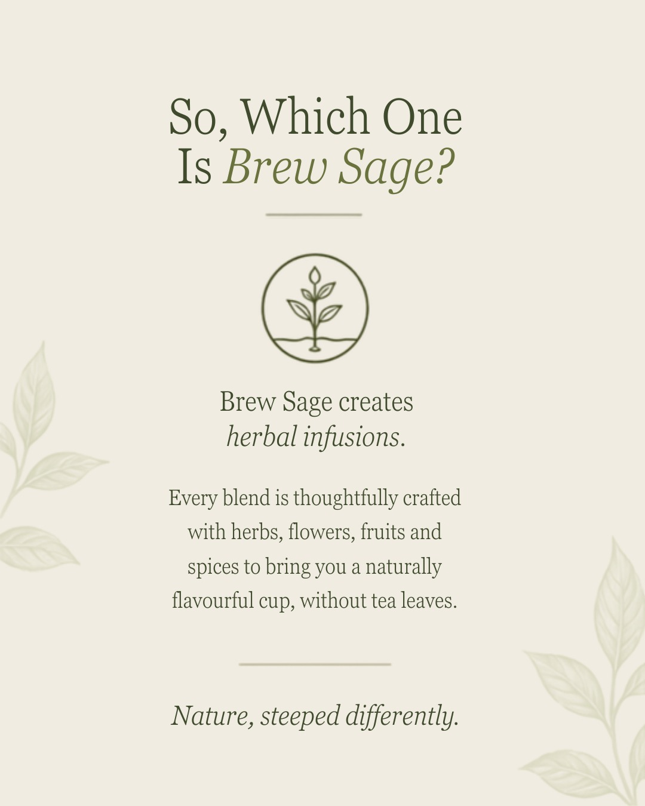
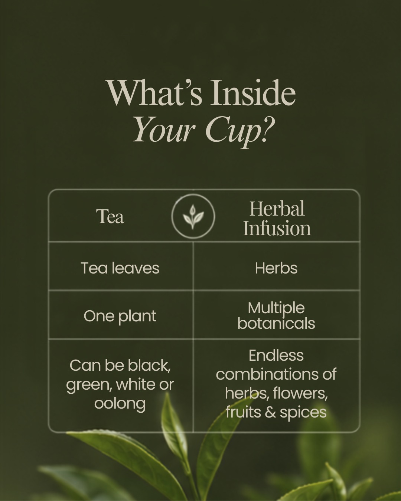
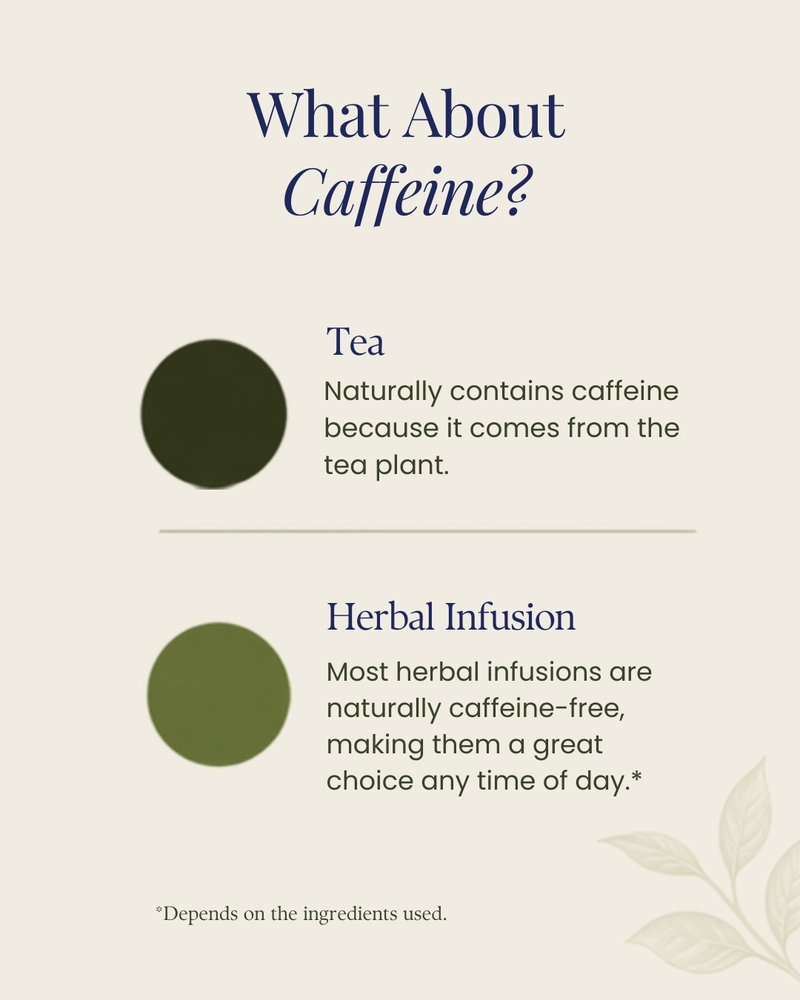
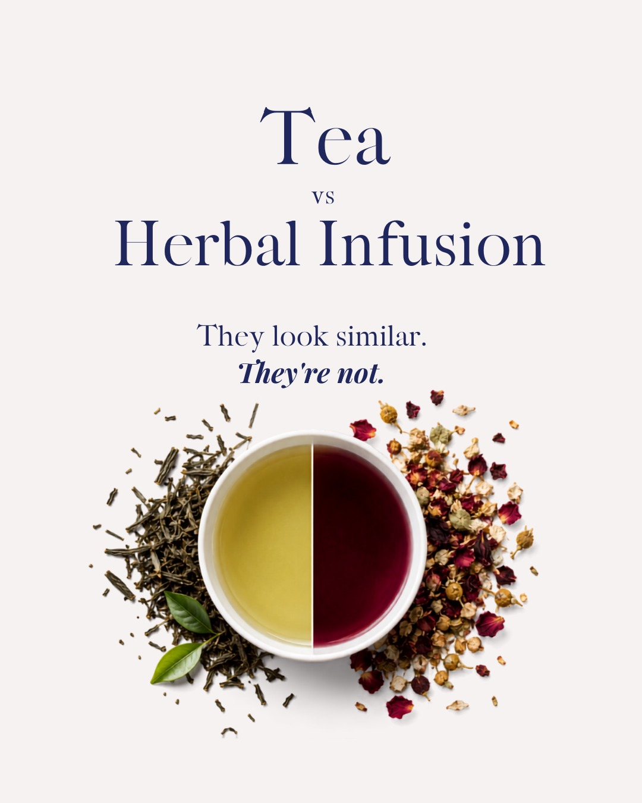
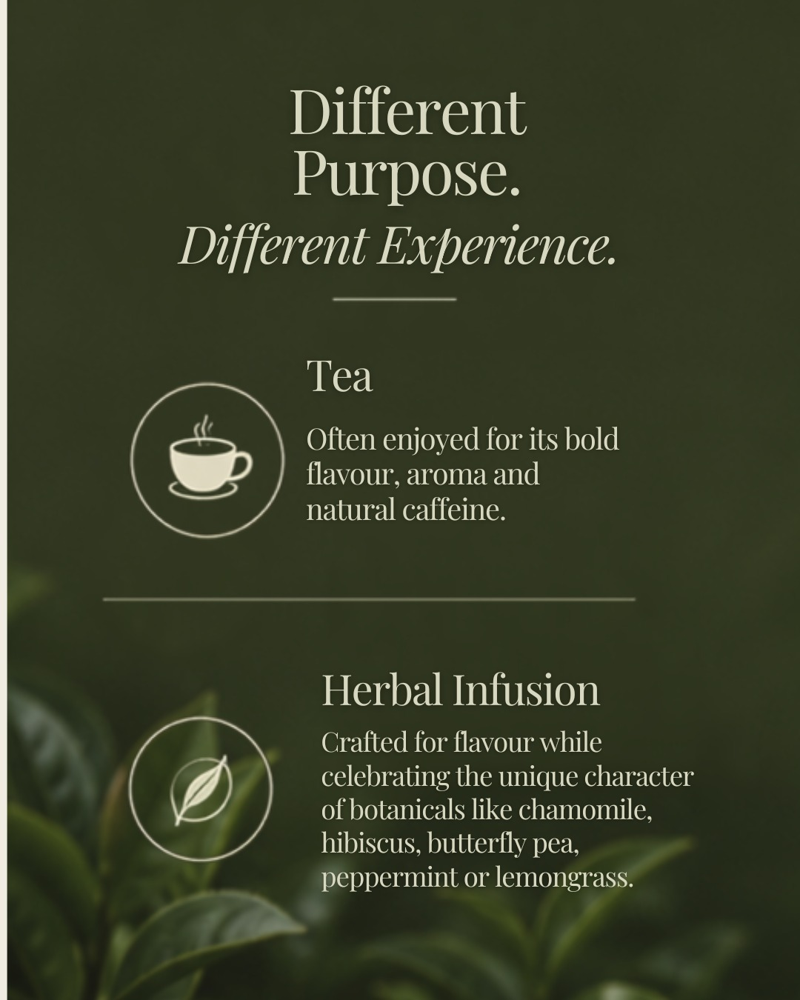
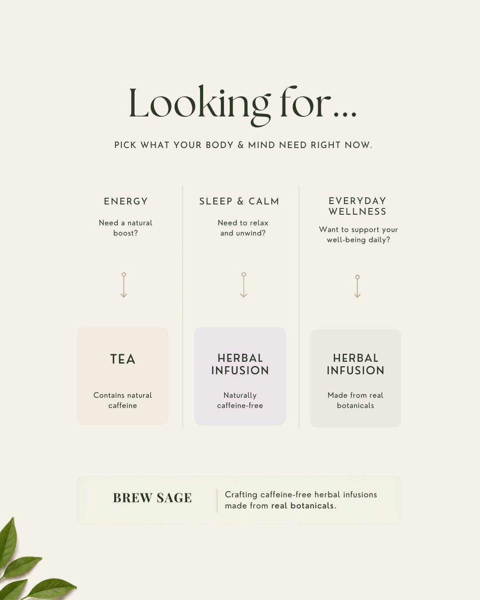